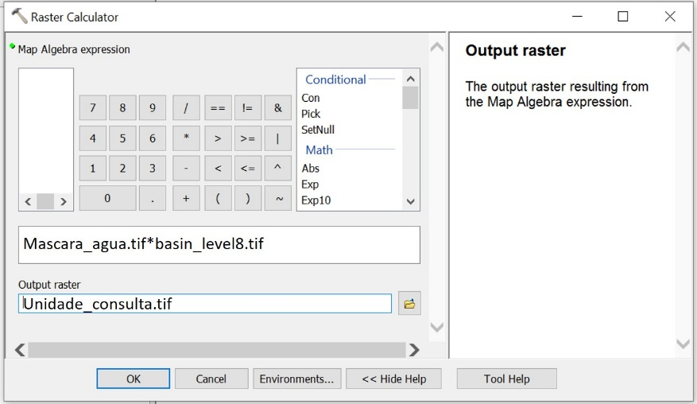
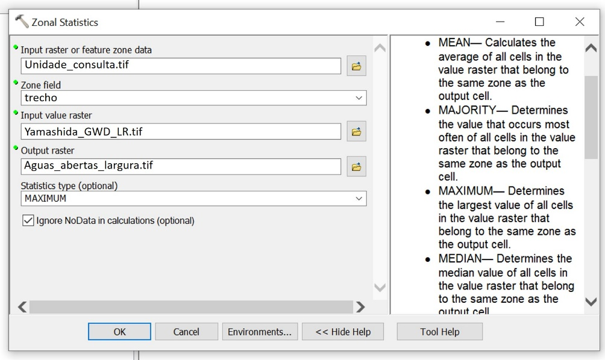
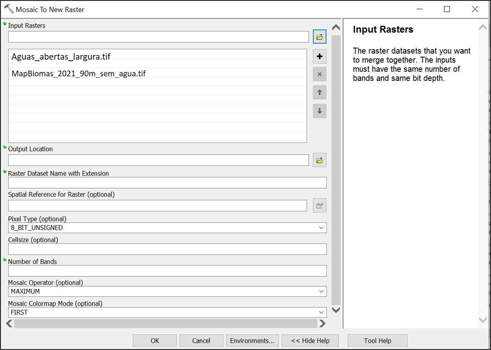

Largura dos corpos d’água
A análise para categorizar os corpos d’água em classes de largura corresponde à Etapa 2 da análise de conectividade local.
Passo 1
No Passo 1 dessa etapa, inicialmente extraímos a máscara de corpos de águas abertas (rios, lagos e oceanos) da camada de uso e cobertura do solo (na escala de 90 m; (map2_aguas?)) e dividimos essa classe única em pedaços menores, regionalizando suas larguras por trechos.

A divisão em trechos ocorreu com o uso da ferramenta “Raster Calculator” (Figura 1), por meio da intersecção entre as camadas matriciais de águas abertas e de bacias hidrográficas no nível 8, produzidas por Lehner &Grill (2013) ((map3-bacias?)).


Passo 2
No Passo 2, para cada um dos trechos gerados no passo anterior, foi calculado o valor máximo de largura de cada trecho de águas abertas, por meio meio da estatística zonal (Figura 2). A largura efetiva máxima dos corpos d’água, de margem a margem, foi obtida através da base GWD – LR de Yamashida et al. 2014 ((map4-aguasporbacias?)).


Passo 3
Uma vez identificada a largura máxima de cada trecho de corpo d’água, agrupamos os rios em quatro classes de largura:
- 1 a 250 m;
- 250 a 1.000 m;
- 1.000 a 4.000 m;
- maior de 4.000 m.
Passo 4
Por fim, utilizando a ferramenta “Mosaic to New Raster” (Figura 3), realizamos uma mosaicagem entre a camada contendo essas quatro classes e a camada do MapBiomas (já subtraída da classe de águas abertas), elevando de 29 para 32 o número de classes de uso e cobertura do solo.
